1 业务场景与推荐架构
场景：业务人员不需要数据工程、数据库或 BI 的背景知识，只需在 Amazon Quick 里做最简配置，就能在线查询部署在 AWS 上的数据库、数据仓库和 RAG 知识库数据，并用一句话完成数据分析与展示。
| 数据所在 | 业务人员会怎么问 | MCP（awslabs 开源） |
|---|---|---|
| Amazon Redshift 数据仓库 |
“按区域和品类统计收入” “哪个月销量最高” |
redshift-mcp-server发现集群、浏览库表、只读查询 |
| Amazon RDS PostgreSQL |
“有哪些表” “最近订单按品类汇总” |
postgres-mcp-server只读角色，直连私网 |
| Amazon Bedrock 知识库 RAG 检索企业文档 |
“退货流程是什么” “某产品支持哪些功能” |
bedrock-kb-retrieval-mcp-server3 个工具： ListKnowledgeBases、QueryKnowledgeBases、AgenticQueryKnowledgeBases |
| 其他 AWS 服务 | DynamoDB、DocumentDB、Neptune、ElastiCache、时序、监控、成本等 | 见第 3 节“支持的服务” |
企业推荐：Cognito + AgentCore Gateway
Quick 的云端 MCP 连接器只接受远程服务，而 awslabs 的 MCP 都是本地进程。企业场景推荐的做法是：用 Cognito（或企业已有的 IdP）签发令牌，用 AgentCore Gateway 作为统一的、带鉴权的远程入口，Lambda 里运行 MCP server。
架构优势
免本地部署与依赖
MCP server 在云端 Lambda 里运行，用户无需在本地电脑安装 uv/uvx、Python 运行时或 awslabs MCP server，也不用维护本机 AWS 凭证和网络到数据库的直连。Quick 用云端连接器自动换令牌即可使用，换台设备、换个人都不受本机环境影响。
安全管控 + 可审计
访问统一经 Cognito 签发的 OAuth 令牌和 Gateway 的 JWT 校验，凭证和权限集中在 Secrets Manager 与 IAM 管理，不下发到终端。每个 Lambda 目标只授予最小权限（如仅 bedrock:Retrieve、数据库只读角色），所有调用经 Gateway 与 CloudTrail/CloudWatch 留痕，可审计、可追溯、可随时在 Cognito 轮换密钥。
后台无感知迭代与扩展
新增数据源或工具只需在同一个 Gateway 上加目标、更新 Lambda，客户端无需改配置；在连接器里重新 Sync 即可看到新工具。版本升级、权限调整、扩容都在后台完成，对用户透明，天然支持多客户端、多团队横向扩展。
2 Client 配置流程
默认使用 Quick Desktop 桌面端配置。只用两种 MCP 连接器：Local——在本机直接运行 MCP，几分钟配好，适合快速验证；云端（Cloud）——用 AgentCore Gateway 加 Cognito 提供统一入口，Quick 自动换令牌，凭证和权限集中管理，是企业最佳实践。Quick 的界面我没有逐项操作，字段来自官方文档，命令本身都在本机实测过。
| 维度 | A 快速：Local 连接器 | B 企业最佳实践：云端 MCP 连接器（AgentCore） |
|---|---|---|
| 适用 | 个人、小团队、演示和验证 | 企业生产环境 |
| 配置 | 一条命令，几分钟；每个用户自己配 | 管理员一次性搭建，并在 Quick 里建一个连接器；用户登录即用 |
| AWS 凭证在哪 | 每个人的电脑（~/.aws） | 集中在 Lambda 角色，电脑上没有 AWS 凭证 |
| 权限与审计 | 每人自己的 profile，难统一 | 统一的 Gateway 鉴权、Lambda 角色、只读库用户，CloudTrail 审计 |
| 网络 | 笔记本要能直达数据库 | Lambda 在 VPC 内私网访问，不受笔记本网络限制 |
| 可用范围 | 只在这台电脑开机联网时可用 | 任何能访问 Gateway 的客户端 |
| 代价 | 管理员 profile 会让 Agent 权限过大 | Quick 自动向 Cognito 换令牌，不用手动更新；单次调用实测 7 到 23 秒 |
| 需要 AgentCore | 不需要 | 需要 |
A 快速：Quick Desktop 的 Local 连接器
入口：Customize → Connectors → Create → Create local connector → Local。字段：Name、Command、Arguments、Description、Environment variables、Timeout（5 到 300 秒，默认 30）。三个通用要点：
- Command 用绝对路径（例如
/opt/homebrew/bin/uvx）。图形界面应用不继承终端的 PATH，pyenv 的 shim 可能找不到。 - Timeout 填 120。首次启动要下载依赖（实测 Postgres MCP 首次 18 秒，托管代理首次 24 秒）。
- 凭证来自环境变量里的
AWS_PROFILE。正式使用请给 MCP 单独建只读 profile，不要用管理员 profile。
配置依赖清单（可交给 Kiro 自动安装）
Local 方式需要在本机准备下面这些依赖。可以交给 Kiro 逐项检查，缺什么装什么。命令以 macOS 为准（我在 macOS 上验证过）；Windows 的启动写法不同，见各 MCP 项目的 README。
| 依赖 | 用途 | 检查命令 | 安装命令（macOS） | 是否必需 |
|---|---|---|---|---|
uv（含 uvx） | 一条命令启动 awslabs MCP，自动管理依赖 | uvx --version | brew install uv | 必需 |
| uvx 的绝对路径 | 填进 Quick 的 Command 字段（图形界面不继承终端 PATH） | which uvx | 无需安装；Homebrew 一般是 /opt/homebrew/bin/uvx | 必需 |
| Python 3.10 及以上 | 运行 awslabs MCP | uv python list --only-installed | uv 会按需自动下载；手动装：uv python install 3.13 | 自动，无需手动 |
| AWS CLI | 配置 profile、校验身份 | aws --version | brew install awscli | 推荐 |
| AWS profile 与凭证 | MCP 以这个 profile 的权限访问 AWS | aws sts get-caller-identity --profile <profile> | 由你自己配置：aws configure --profile <profile>。Kiro 不要代填或打印密钥 | 必需 |
| Quick Desktop 桌面端 | 客户端 | — | 手动安装，Kiro 无法代装 | 必需 |
Redshift（awslabs.redshift-mcp-server）命令已验证
| 字段 | 填写 |
|---|---|
| Name | Redshift |
| Command | /opt/homebrew/bin/uvx |
| Arguments | awslabs.redshift-mcp-server@latest |
| Environment variables | AWS_PROFILE=<profile>、AWS_REGION=us-east-1、AWS_DEFAULT_REGION=us-east-1、LOG_LEVEL=ERROR |
| Timeout (seconds) | 120 |
实测：启动加列工具 5.5 秒，返回 7 个工具，能发现 Serverless 工作组。默认只读，不要加 ACCESS_MODE=read-write。
RDS PostgreSQL（awslabs.postgres-mcp-server）命令已验证
| 字段 | 填写 |
|---|---|
| Name | RDS PostgreSQL |
| Command | /opt/homebrew/bin/uvx |
| Arguments | awslabs.postgres-mcp-server@1.2.2 --region us-east-1 --secret_arn <只读角色的密钥 ARN> --privilege_check enforce |
| Environment variables | AWS_PROFILE=<profile>、AWS_REGION=us-east-1、FASTMCP_LOG_LEVEL=ERROR |
| Timeout (seconds) | 120 |
- 不要在 Arguments 里加
--db_type、--db_endpoint：对 RDS 单实例，这个 server 会因缺少集群 ARN 启动即崩溃。连接由 Agent 调用connect_to_database完成，cluster_identifier必须传空字符串。 - 数据库账号用只读角色，密码放 Secrets Manager，用
--secret_arn引用。 - 本地模式会暴露 7 个工具，包括
create_cluster（创建 Aurora 集群）。profile 若是管理员权限，Agent 理论上能真的建集群并计费，请换成范围很小的 profile。 - 笔记本要能到达数据库的 5432，换网络后需要更新安全组白名单。
第一条聊天消息可以这样告诉 Agent 怎么连（聊天输入没有字符限制）：
请先用 connect_to_database 连接数据库：region us-east-1，database_type RPG，
connection_method pgwire，port 5432，database <库名>，cluster_identifier 传空字符串，
db_endpoint <RDS 端点>。
连接后用 run_query 和 get_table_schema 查询，并带上同样的 connection_method、db_endpoint、database。
然后告诉我有哪些表。Bedrock 知识库 RAG（awslabs.bedrock-kb-retrieval-mcp-server）命令已验证
| 字段 | 填写 |
|---|---|
| Name | Bedrock Knowledge Base |
| Command | /opt/homebrew/bin/uvx |
| Arguments | awslabs.bedrock-kb-retrieval-mcp-server@latest |
| Environment variables | AWS_PROFILE=<profile>、AWS_REGION=<知识库所在区域>、FASTMCP_LOG_LEVEL=ERROR |
| Timeout (seconds) | 120 |
AWS_REGION要填知识库所在的区域。我验证时知识库在 us-west-2，所以填的是 us-west-2。- 实测：启动 5.6 秒，3 个工具；
QueryKnowledgeBases（参数query、knowledge_base_id必填，另有number_of_results、reranking等）返回正常结果。ListKnowledgeBases我没有测。 - 检索前先确认知识库数据源的同步状态是
COMPLETE；同步失败的知识库检索返回 0 条。 - 经 AgentCore Gateway（Lambda 目标）也已验证：
tools/list共 11 个工具，QueryKnowledgeBases不传知识库 ID 也能用默认知识库检索，单次约 6 秒；Lambda 角色只授予对该知识库的bedrock:Retrieve一项权限。 - 需要对知识库的检索权限。我验证时用的是管理员 profile，最小权限我没有梳理。
对 Agent 说：“在知识库 <知识库 ID> 里查一下……，给出处”。
A 演示：Local 连接器从配置到出图（Quick Desktop 截图）
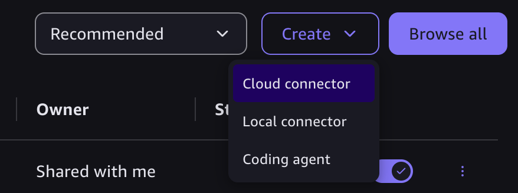
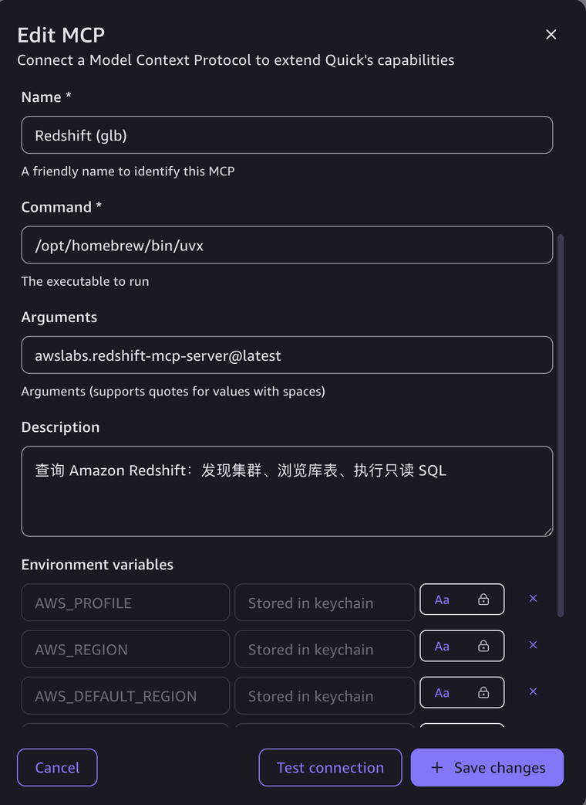
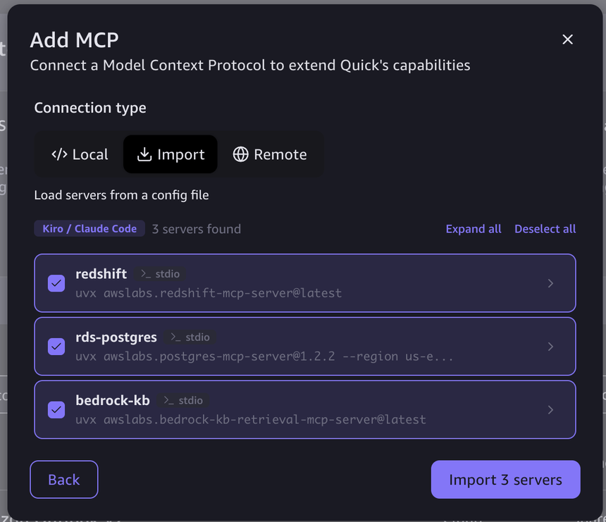
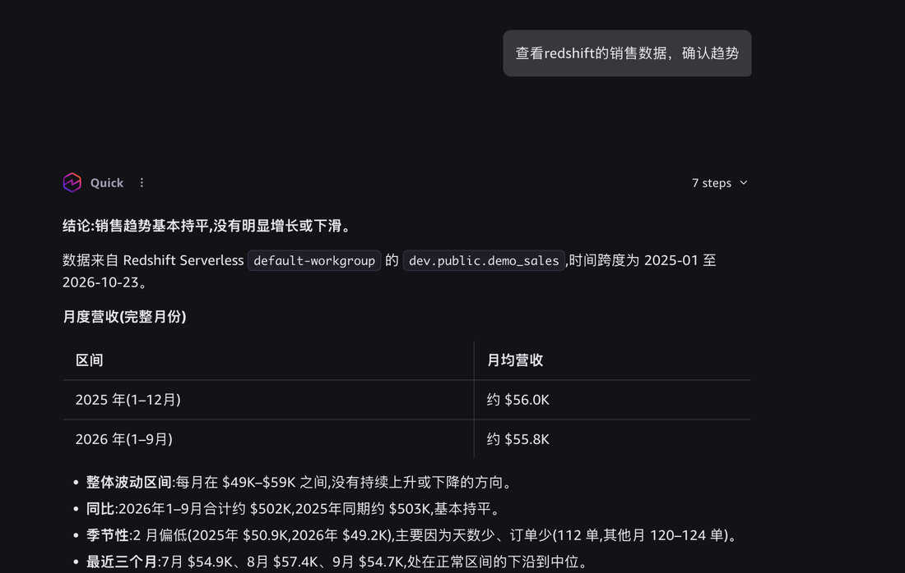
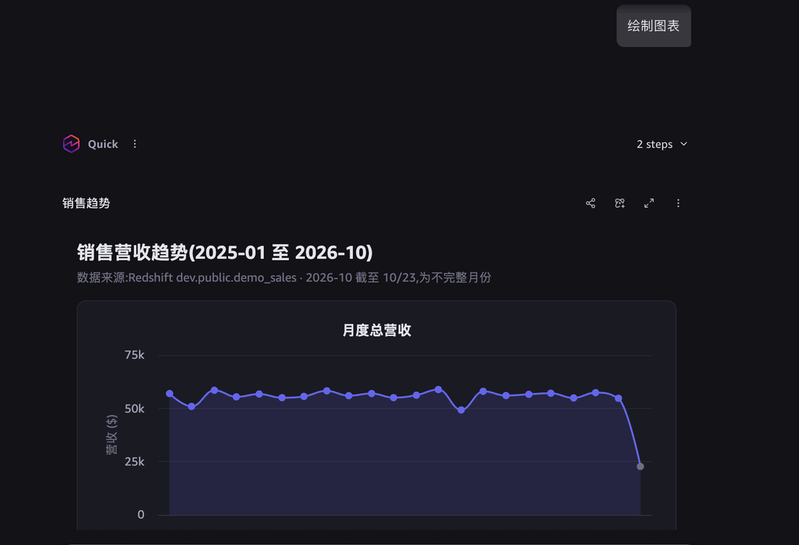
B 企业最佳实践：Cognito + AgentCore Gateway（Quick 云端 MCP 连接器，自动换令牌）
管理员先按第 4 节搭好 Gateway 和 Cognito，然后在 Quick 里建一个 MCP 连接器，认证方式选服务间 OAuth（Service-to-service OAuth）。Quick 用 Client ID、Client secret 和 Token URL 自己向 Cognito 换令牌，过期自动续，用户不需要碰令牌。创建后，在 Quick Desktop 登录同一账号，就能在 Customize → Connectors 里看到它，并在 Agent 里使用（见下面的截图）。
-
从 AgentCore 取 Gateway 地址
地址以
/mcp结尾，填在连接器的 URL 字段。aws bedrock-agentcore-control get-gateway --gateway-identifier <GATEWAY_ID> \ --query gatewayUrl --output text -
从 Cognito 取“换令牌”需要的值
Token URL 由域名前缀和区域拼成；Client ID 来自 app client；Client secret 放在 Secrets Manager 里。
# 域名前缀 → Token URL = https://<域名前缀>.auth.<区域>.amazoncognito.com/oauth2/token aws cognito-idp describe-user-pool --user-pool-id <POOL_ID> --query UserPool.Domain --output text # app client 的名称与 Client ID aws cognito-idp list-user-pool-clients --user-pool-id <POOL_ID> \ --query "UserPoolClients[].[ClientName,ClientId]" --output textClient secret 不要显示出来，需要时直接送进剪贴板，粘贴到 Quick 的表单里：
aws secretsmanager get-secret-value --secret-id <密钥名> --query SecretString --output text \ | python3 -c 'import json,sys; print(json.load(sys.stdin)["client_secret"], end="")' | pbcopy -
在 Quick 里创建 MCP 连接器
入口：Quick 的 Connectors 页 → Create for your team → Model Context Protocol。下面的截图是在 Quick 网页版里创建的；Desktop 的 Create 菜单里也有 Cloud connector（见上面 A 的截图 1），本次我没用它。创建是一个五步向导：Connect、Authenticate、Manage Write Permissions、Manage Read Permissions、Publish。字段如下：
| 字段 | 填什么 | 来源 |
|---|---|---|
| Name | 例如 AWS MCP Gateway | 自定 |
| Description | 英文短句，说明数据源和使用提示 | 自定 |
| MCP server URL（Base URL） | Gateway 地址，以 /mcp 结尾 | AgentCore Gateway |
| Authentication | Service-to-service OAuth | — |
| Client ID | app client 的编号，不算秘密 | Cognito |
| Client secret | app client 的密钥，相当于密码，不要贴到聊天或文档里 | Secrets Manager |
| Token URL | https://<域名前缀>.auth.<区域>.amazoncognito.com/oauth2/token | Cognito |
| VPC connection（资源服务器、认证服务器） | Public network。Gateway 与 Cognito 都是公网端点 | — |
-
Review 工具并发布
下一步 Quick 会列出 Gateway 暴露的全部工具（名称带目标前缀，如
redshift-lambda-target___list_clusters）。只勾选需要的，再选择谁可以使用，然后 Publish。 -
在 Desktop 里使用
登录同一个 Quick 账号，在 Desktop 的 Connectors 里能看到这个连接器，状态显示
Connected and ready to use with your agents（云端截图 7）。令牌由 Quick 自动换，不用手动更新。
- 实测：用 Cognito 的 client 凭证建连接器，状态为 Ready，Gateway 上的 Redshift 与 PostgreSQL 工具都已注册。
- Gateway 用普通 HTTP POST 加 Bearer 令牌实测：
tools/list返回 200；不带令牌或带错误令牌返回 401。 - Quick 把工具列表当静态的。Gateway 新增目标（例如加了知识库）后，要在连接器里重新 Sync 或重新建立连接，新工具才会出现。
- Quick 会把
run_query、execute_query这类能执行 SQL 的工具标成 Write。这是按工具判断的，不代表数据库真能写，真正的写权限由数据库用户决定。调用前 Quick 会弹出“允许”确认。 - Client secret 是整个 Gateway 的钥匙，可以调用所有目标的工具。不要贴到聊天或文档里；怀疑泄露就在 Cognito 里轮换。
B 演示：云端 MCP 连接器从创建到 Desktop 使用（截图）
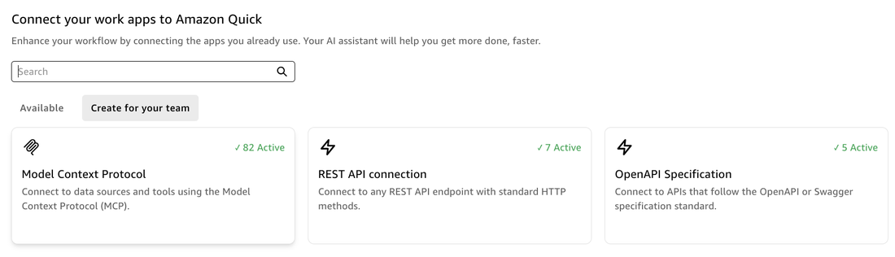
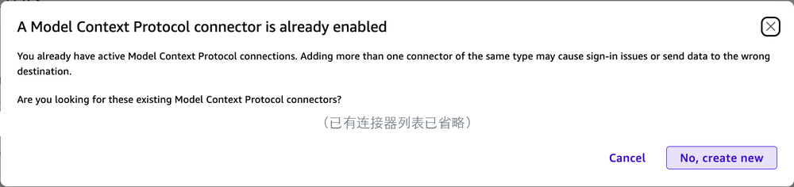
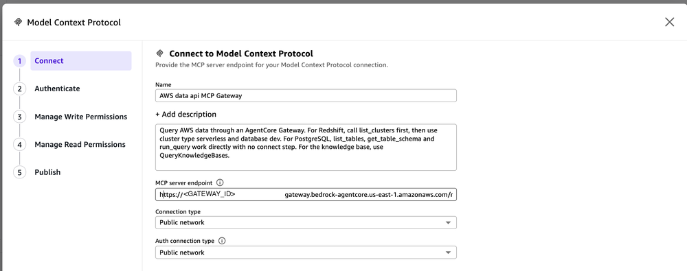
/mcp 结尾，截图里的 Gateway 编号已用占位符遮住）。Connection type 与 Auth connection type 都选 Public network。下一步 Authenticate 选服务间 OAuth，填 Client ID、Client secret、Token URL（字段见上表，这一步我没有截图）。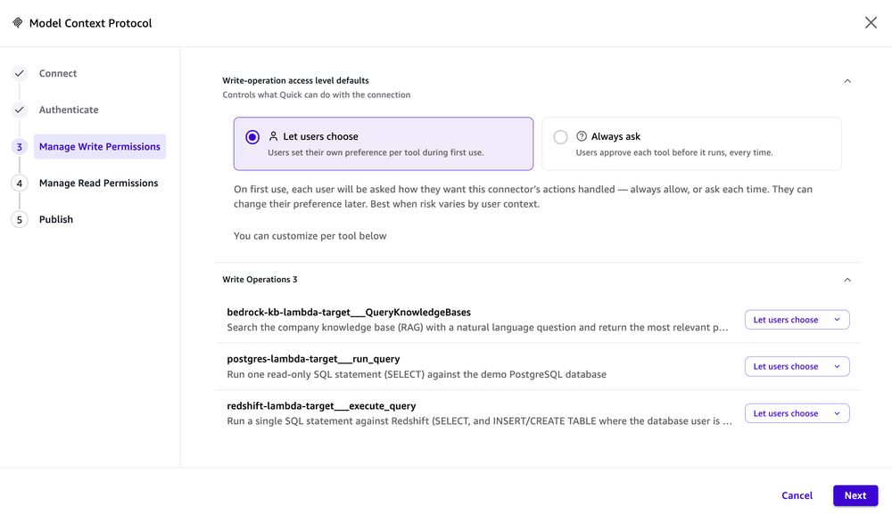
QueryKnowledgeBases、PostgreSQL 的 run_query、Redshift 的 execute_query。默认 Let users choose（用户首次使用时自己选），也可以改成 Always ask（每次运行前都要批准）。能执行 SQL 的工具，企业环境建议用 Always ask。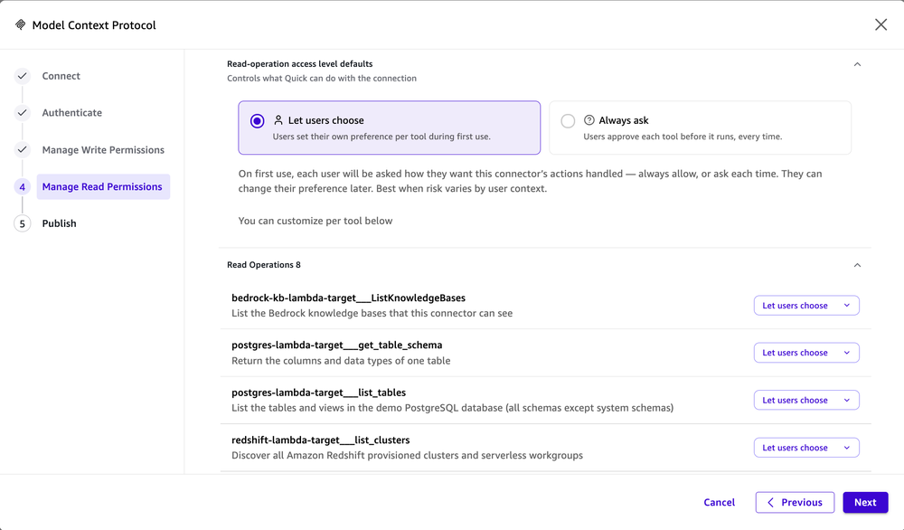
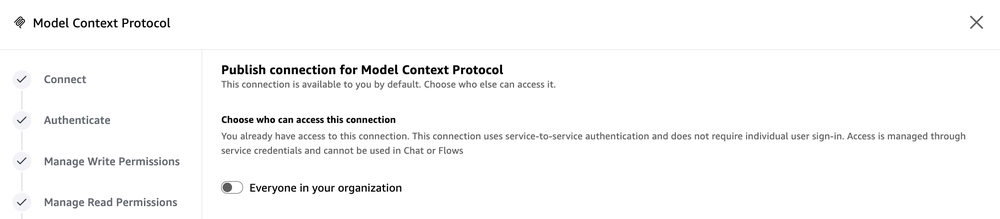
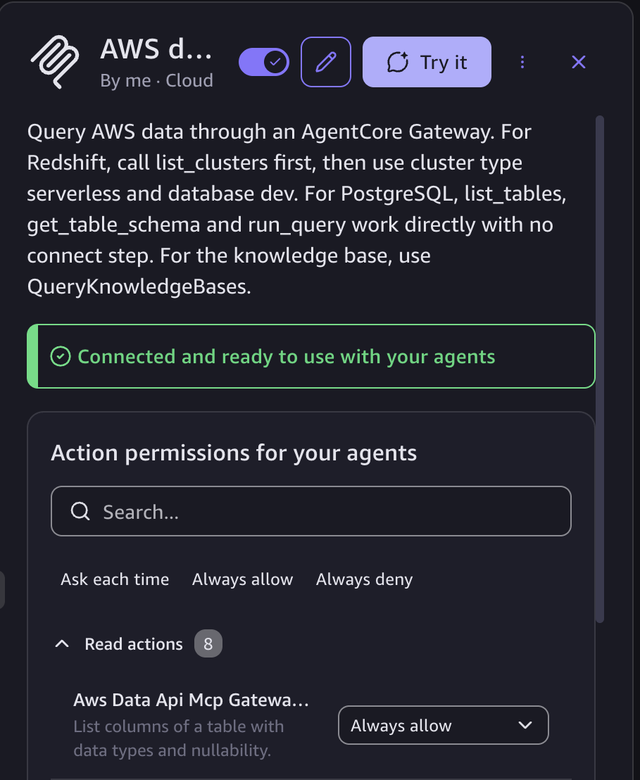
3 MCP 介绍与支持的服务
MCP 是什么
MCP（Model Context Protocol，模型上下文协议）是一个开放标准，规定 AI 应用怎样连接外部的数据和工具。可以把它看成“AI 应用的 USB 接口”：工具方按统一格式暴露能力，AI 应用按统一格式发现和调用，不用为每个系统写一套专用集成。
MCP 客户端
AI 应用一侧，例如 Amazon Quick、Kiro、Claude。它连接服务端，把服务端的工具交给模型选择和调用。
MCP 服务端
暴露工具的一侧。每个工具有名称、描述和参数定义（JSON Schema）。例如 execute_query、QueryKnowledgeBases。
一次调用
客户端先 tools/list 发现有哪些工具，模型决定调用哪个，客户端发 tools/call，服务端执行并返回结果。
在 Amazon Quick 里意味着什么
- MCP 服务端的每个工具会注册成一个 Action，管理员逐个审阅并开启，Agent 才能调用。
- 调用前 Quick 会弹出“允许”确认，可以把用户放在回路里。
- 连接器本身有三个权限：创建与更新、共享、使用，用来控制谁能建、谁能用。
- 工具的描述很重要：Agent 靠它判断什么时候用哪个工具。描述写错会让 Agent 误判，例如把“写操作被拒绝”写进描述，Agent 就不会尝试写入。
AWS 提供的 MCP 有三类
- awslabs/mcp 开源仓库：为各个服务写的 MCP server，本次用的就是这一类。需要自己运行，版本和兼容性自己负责（本次实测遇到过依赖冲突和启动参数问题）。该仓库的说明提到后继项目是 Agent Toolkit for AWS，新项目建议关注。
- AWS 托管的 MCP Server：由 AWS 运行，覆盖几乎所有 AWS API，用 SigV4 或 OAuth 2.1 访问；它只能调 AWS API，所以对没有 Data API 的普通 RDS 查不了行数据。
- 自己托管：把上面任一类放到 AgentCore（Gateway 加 Lambda，或 Runtime）。企业场景用它给 Quick 提供统一的云端入口。
支持哪些服务
下表按 awslabs/mcp 仓库 src/ 目录里的 MCP server 归类（共 63 个目录，2026-10-22 核对）。归类按名称，具体能力以各自的 README 为准；PyPI 包名一般是 awslabs.<目录名>。
| 领域 | MCP server |
|---|---|
| 数据仓库与关系型数据库 | redshift-mcp-server、postgres-mcp-server、mysql-mcp-server、aurora-dsql-mcp-server、oracle-mcp-server、mssql-mcp-server、db2-mcp-server |
| NoSQL、缓存、图、时序 | dynamodb-mcp-server、documentdb-mcp-server、elasticache-mcp-server、valkey-mcp-server、memcached-mcp-server、amazon-neptune-mcp-server、amazon-keyspaces-mcp-server、timestream-for-influxdb-mcp-server、s3-tables-mcp-server |
| 数据处理与分析 | aws-dataprocessing-mcp-server（Glue、Athena、EMR）、sagemaker-unified-studio-spark-troubleshooting-mcp-server、sagemaker-unified-studio-spark-upgrade-mcp-server |
| RAG、检索与生成式 AI | bedrock-kb-retrieval-mcp-server、amazon-kendra-index-mcp-server、amazon-qindex-mcp-server、amazon-qbusiness-anonymous-mcp-server、aws-bedrock-custom-model-import-mcp-server、sagemaker-ai-mcp-server、amazon-bedrock-agentcore-mcp-server、amazon-translate-mcp-server、document-loader-mcp-server |
| 计算、容器与无服务器 | eks-mcp-server、ecs-mcp-server、finch-mcp-server、aws-serverless-mcp-server、lambda-tool-mcp-server、stepfunctions-tool-mcp-server |
| 消息与应用集成 | amazon-sns-sqs-mcp-server、amazon-mq-mcp-server、aws-appsync-mcp-server、openapi-mcp-server |
| 监控、成本、安全与治理 | cloudwatch-mcp-server、cloudwatch-applicationsignals-mcp-server、cloudtrail-mcp-server、prometheus-mcp-server、billing-cost-management-mcp-server、aws-pricing-mcp-server、iam-mcp-server、well-architected-security-mcp-server、security-agent-mcp-server、aws-support-mcp-server、aws-network-mcp-server |
| 基础设施即代码与通用 API | aws-api-mcp-server、ccapi-mcp-server（Cloud Control API）、aws-iac-mcp-server、aws-transform-mcp-server |
| 文档与知识 | aws-documentation-mcp-server、aws-knowledge-mcp-server |
| 行业与其他 | healthlake-mcp-server、healthimaging-mcp-server、aws-healthomics-mcp-server、aws-iot-sitewise-mcp-server、aws-location-mcp-server、aws-for-sap-management-mcp-server、roda-mcp-server（开放数据注册表） |
| 开发框架 | mcp-lambda-handler（把自己的 MCP 服务放进 Lambda 的框架，不是对应某个服务） |
怎么选：先看数据在哪个服务，在上表找同名的 server；再看接法：个人和小团队用 Local 连接器直接在本机运行；企业场景用云端 MCP 连接器，像本方案这样挂到 AgentCore。托管的 AWS MCP Server 能调用几乎所有 AWS API，但它没有专用的查询工具，也没有只读保护，用管理员权限运行风险很大。
4 MCP server on AgentCore 搭建方式
完整的搭建步骤、脚本和踩坑记录见 GitHub 上的 AGENTS.md，这里不再列出。全程使用 AWS CLI，不用 CDK 或 CloudFormation；把该文档交给 AI Agent（如 Kiro）即可按序执行。
5 权限授予
权限分层授予，任何一层收紧都能阻止越权。最后一层（数据库用户权限）才是真正的边界；服务端的“只读”开关和 Agent 的确认弹窗都是辅助。
Quick：谁能创建、共享、使用连接器
需要 Enterprise 订阅。每个 MCP 连接器有三个自定义权限：Create and update action、Share action、Use action。工具发现后默认不可用，需管理员逐个开启 Action。每次调用前用户还要点“允许”。
OAuth：谁能拿到令牌
Cognito app client 只开 client_credentials，只允许一个自定义 scope quick-mcp-demo/invoke。Gateway 用 allowedClients 限定只接受这个 client 的令牌。密钥放 Secrets Manager，生产环境建议轮换，并给 /oauth2/token 挂 WAF。
Gateway 角色：只能调用这一个 Lambda
信任 bedrock-agentcore.amazonaws.com（带 aws:SourceAccount 条件）。不给 bedrock-agentcore:*，不给 Secrets Manager，不给其他函数。
Lambda 角色：只能访问指定的 Redshift 工作组
执行类权限限定到具体工作组 ARN；只有发现类和读取类动作使用 *（这些动作不支持资源级限制）。
MCP server 模式：默认只读
awslabs Redshift MCP 默认每条语句在只读事务里运行。受限写入需要在 Lambda 环境变量里显式设置 ACCESS_MODE=read-write。
数据库用户权限：真正的边界
Lambda 角色在库里对应用户 IAMR:<角色名>。只给它需要的表权限；即使 Agent 被诱导生成破坏性语句，数据库也会拒绝。
IAM 策略（占位符已替换为变量）
Lambda 角色：Redshift 访问
{
"Version": "2012-10-17",
"Statement": [
{ "Sid": "Discovery", "Effect": "Allow",
"Action": ["redshift:DescribeClusters",
"redshift-serverless:ListWorkgroups"],
"Resource": "*" },
{ "Sid": "ServerlessCredentials", "Effect": "Allow",
"Action": ["redshift-serverless:GetCredentials"],
"Resource": "arn:aws:redshift-serverless:us-east-1:<ACCOUNT_ID>:workgroup/<WORKGROUP_ID>" },
{ "Sid": "DataApiRun", "Effect": "Allow",
"Action": ["redshift-data:ExecuteStatement",
"redshift-data:BatchExecuteStatement"],
"Resource": "arn:aws:redshift-serverless:us-east-1:<ACCOUNT_ID>:workgroup/<WORKGROUP_ID>" },
{ "Sid": "DataApiRead", "Effect": "Allow",
"Action": ["redshift-data:DescribeStatement",
"redshift-data:GetStatementResult"],
"Resource": "*" }
]
}Gateway 角色：信任与调用
// 信任策略
{ "Version": "2012-10-17",
"Statement": [{ "Effect": "Allow",
"Principal": { "Service": "bedrock-agentcore.amazonaws.com" },
"Action": "sts:AssumeRole",
"Condition": { "StringEquals": { "aws:SourceAccount": "<ACCOUNT_ID>" } } }] }
// 权限策略
{ "Version": "2012-10-17",
"Statement": [{ "Effect": "Allow",
"Action": "lambda:InvokeFunction",
"Resource": [
"arn:aws:lambda:us-east-1:<ACCOUNT_ID>:function:quick-mcp-demo-redshift-mcp",
"arn:aws:lambda:us-east-1:<ACCOUNT_ID>:function:quick-mcp-demo-redshift-mcp:*" ] }] }Redshift 库内授权
只读（默认）
GRANT SELECT ON public.demo_sales, public.demo_products
TO "IAMR:quick-mcp-demo-lambda-role";受限写入（当前演示状态）
GRANT INSERT ON public.demo_sales, public.demo_products
TO "IAMR:quick-mcp-demo-lambda-role";
-- 不授予 UPDATE / DELETE / TRUNCATE / DROP
-- public schema 的建表权限本来就对所有用户开放当前演示环境的 MCP 处于受限写入状态。
Lambda 环境变量为 ACCESS_MODE=read-write 加 UNSAFE_SKIP_WRITE_CONFIRMATION=true。后者按 awslabs 文档是必须的：读写模式下服务端会通过 MCP 的 elicitation 逐条确认写语句，而 Lambda 加 Gateway 这条链路无法弹出确认。这意味着服务端的逐条确认已关闭，防线只剩 Quick 的调用前确认和数据库权限。
所以：不要给这个库用户 UPDATE、DELETE 或管理员权限；写入前先拍快照（已拍 quick-mcp-demo-pre-write，保留 7 天）；演示完恢复只读（disable_write.sh，该脚本只做过语法检查，未实际运行）。
其他权限要点
构建者需要的权限
创建 IAM 角色、Lambda、S3 桶、Cognito、Secrets Manager、AgentCore Gateway 的权限，以及以表所有者身份执行 GRANT 的数据库权限。我没有做最小化梳理。
密钥
Cognito 客户端密钥和数据库密码只放 Secrets Manager，不写进文档、代码仓库或 CloudFormation Outputs。
AWS profile 与托管 MCP
本地连接器和托管 AWS MCP Server 都用本机 AWS profile 的权限运行。管理员 profile 会让 Agent 能调用任意 API（包括删除、创建集群），请换成只读或范围很小的角色；托管服务带有 aws:ViaAWSMCPService 条件键，可用来限制 AI 发起的操作。
网络
Gateway 与 Cognito 令牌端点是公网 HTTPS，由 JWT 保护。Lambda 到 Redshift 走 Data API，不需要给数据库开入站端口。MCP 服务若在内网，需先建 Quick VPC 连接。
6 网络安全（推荐私网 / 白名单）
原则：能走私网就走私网；做不到私网时，用白名单把可达范围缩到最小，并让 JWT、IAM、数据库权限继续兜底。演示环境为了快速联调用的是“公网 + 白名单”，生产环境应按下表改成私网。
演示环境的现状（不要直接照搬到生产）：
- Gateway 和 Cognito 令牌端点是公网 HTTPS，靠 JWT 保护，未授权请求返回 401（已实测）。
- Redshift 工作组和演示 RDS 实例都设为公网可访问。数据库安全组放行了 Quick 的区域 IP 段（us-east-1：
52.23.63.224/27），RDS 安全组还放行了操作机轮换出口的/29地址池。 - 放行 Redshift 的安全组是 VPC 的 default 组，同一 VPC 里使用它的其他资源也会受这条规则影响。
| 链路 | 演示现状 | 推荐（私网） | 最低要求（白名单） |
|---|---|---|---|
| Quick → MCP 端点（AgentCore Gateway） | 公网 HTTPS，JWT 校验 | 在 VPC 里创建 Gateway 的接口端点 com.amazonaws.<region>.bedrock-agentcore.gateway，Quick 通过 Quick VPC 连接访问（创建 MCP 连接器时 Connection type 选该 VPC 连接） |
保持 JWT 校验和 allowedClients。Gateway 按源 IP 限制的原生能力我没有找到，未验证 |
| Quick → 授权服务器（Cognito 令牌端点） | 公网 | 授权服务器放进 VPC 内可达，并给连接器设置 auth-server VPC 连接。Cognito 的令牌端点本身是公网接口 | 给 /oauth2/token 挂 WAF（限流、必要时 IP 白名单）；密钥放 Secrets Manager 并轮换 |
| Gateway → Lambda | AWS 内部，由 Gateway 角色调用 | 同左，无需公网 | Gateway 角色只允许调用这一个函数（已做） |
| Lambda → Redshift / Secrets Manager | Lambda 不在 VPC 内，走 Redshift Data API 的公网 HTTPS 端点，IAM 签名；数据库不需要开入站端口 | Lambda 放进 VPC，通过接口端点访问 Data API、Secrets Manager、STS，不经公网出口（端点服务名以官方文档为准） | IAM 策略限定到具体工作组 ARN（已做） |
| Lambda → RDS PostgreSQL | Lambda 在 VPC 内，RDS 安全组只放行 Lambda 的安全组（5432），走私网地址；Secrets Manager 与 RDS API 经接口端点，私有 DNS 关闭 已验证 | 同左；生产环境再把 RDS 设为非公网可访问，并考虑多可用区 | 安全组引用，不使用 CIDR |
| 开发运维 → 数据库 | 放行操作机的轮换出口地址池（演示用） | 通过 SSM Session Manager、堡垒机或 VPN 访问，不对公网开放 | 只放行固定出口的 /32，用完撤销 |
| 数据库公网可访问开关 | Redshift：开；演示 RDS：开 | 关闭（PubliclyAccessible=false），放在私有子网 |
必须开时，配合上面的安全组白名单 |
| 本说明页面（CloudFront） | 公开可访问，响应头带 noindex |
放在 WAF IP 白名单之后，或使用签名 URL | 至少加 noindex 和安全响应头 |
从演示改成私网的步骤
-
创建 Quick VPC 连接
需要一个执行角色（信任 Quick 服务主体，权限含
ec2:CreateNetworkInterface、ModifyNetworkInterfaceAttribute、DeleteNetworkInterface、DescribeSubnets、DescribeSecurityGroups）。选择子网和一个专用安全组。 -
为 MCP 端点配置私网解析
Quick 对 MCP 集成不使用 VPC 默认 DNS。必须在 VPC 连接的 DNS resolver endpoints 字段填入 Route 53 Resolver 入站端点的 IP，否则 MCP 主机名无法解析，连接器创建失败。这一条同样适用于经 PrivateLink 暴露的公网主机名。
-
创建 AgentCore 接口端点
AgentCore 提供三个 PrivateLink 端点：数据面
bedrock-agentcore、控制面bedrock-agentcore-control、Gatewaybedrock-agentcore.gateway。访问 Gateway 用最后一个，并启用私有 DNS。注意 端点策略只能按 IAM 主体限制调用方，不能按 OAuth 用户限制；要让 OAuth 请求通过，端点策略的 Principal 必须是
*。所以身份控制要靠 JWT、allowedClients和端点的安全组。 -
数据库改为私网
关闭公网可访问，放进私有子网；数据库安全组改为引用 Quick VPC 连接的安全组（入站数据库端口），Quick 连接的安全组出站放行到数据库安全组。删除放行 Quick IP 段和操作机地址池的规则。
-
Lambda 放进 VPC
给 Lambda 配 VPC 子网和安全组，并创建访问 Redshift Data API、Secrets Manager、STS 所需的接口端点；Lambda 角色加上网络接口相关权限。
-
复测
用
test_gateway.py的同类客户端从 VPC 内测 401、工具列表、查询；在 Quick 里重建连接器并确认工具发现成功。
以上私网方案来自官方文档，未在演示环境实测。私网改造会同时改变 DNS、路由和安全组，建议先在非生产环境完整走一遍，再做切换。
通用加固清单
- 安全组按“最小端口、最小来源”，优先引用安全组而不是 CIDR。
- 不要对
0.0.0.0/0开放数据库端口或 SSH。 - 白名单要有负责人和到期时间，用完撤销；Quick 的 IP 段变化时要同步更新。
- 开启 CloudTrail，并关注
CreateOAuth2Token类事件与 Gateway 调用。 - Quick 管理员可通过自定义权限限制谁能创建、共享、使用该连接器，并核对出站连接与数据外发范围。